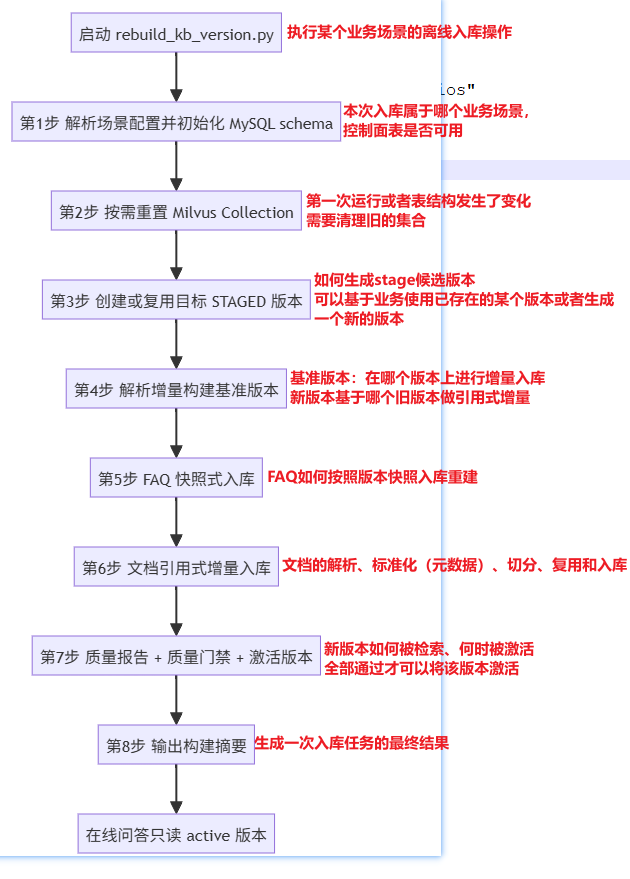

离线入库链路学习笔记¶
这份笔记用于系统学习 KnowForge RAG Platform 的离线入库链路。
离线入库不是简单地“读取文件、切分文本、写入向量库”。在企业 RAG 系统里，离线入库承担的是知识资产发布职责：原始资料必须经过场景隔离、版本管理、权限元数据、文档切分、增量复用、质量检查和版本激活，才能成为线上问答可检索的 active 知识库。
学完这份笔记，你需要能回答一个核心问题：
一份企业资料，如何从本地文件变成带版本、带权限、可检索、可回滚的知识资产？
一、学习目标¶
完成本节学习后，你应该能够：
- 说清楚离线入库链路和在线问答链路的职责边界。
- 按
scripts/rebuild_kb_version.py::main()的代码顺序复述完整离线发布流程。 - 解释 FAQ 为什么采用快照式重建，文档为什么采用引用式增量。
- 说明
kb_version、version_seq、valid_from_seq、valid_to_seq的关系。 - 判断一个文件在增量入库时会被跳过、复用、重建还是过期。
- 读懂入库质量报告，并判断哪些问题会阻断版本激活。
二、离线入库总流程图¶
这份笔记只按下面总流程图的 8 个阶段展开。每个阶段都先给出和代码注释对齐的片段，再拆成“学习目标、源码入口、实现步骤、重点注意事项、练习、阶段总结”。
build_parser()、validate_args() 和 quality_thresholds_from_args() 属于进入主流程前的启动校验，不单独算作主流程阶段，放在文末附录。
下面这张图按 scripts/rebuild_kb_version.py::main() 的代码注释编号组织。后续笔记的阶段编号也按这 8 个步骤展开。
flowchart TD
A[执行 rebuild_kb_version.py] --> B[第1步 解析场景配置并初始化 MySQL schema]
B --> C{第2步 是否 reset Milvus Collection}
C -->|是| D[删除当前场景 FAQ/Doc Collection]
C -->|否| E[第3步 创建或复用目标 STAGED 版本]
D --> E
E --> F{第4步 是否增量构建}
F -->|是| G[解析 incremental base 版本并记录基准]
F -->|否| H[第5步 FAQ 快照式入库]
G --> H
H --> I[第6步 文档引用式增量入库]
I --> J[第7步 质量报告 + 质量门禁 + 激活版本]
J --> K{质量门禁是否通过}
K -->|否| L[保存报告, 保留 STAGED 版本, 不激活]
K -->|是| M{是否传入 --activate}
M -->|否| N[保存报告, 不切换 active 指针]
M -->|是| O[激活版本, 切换 MySQL active 指针]
N --> P[第8步 输出构建摘要]
O --> P
P --> Q[线上查询按当前 active 指针读取版本]这条链路有一个最重要的判断：
写入 Milvus 不等于上线。只有质量门禁通过，并且 active 指针切换完成，新版本才会成为线上默认检索版本。
三、阶段总览¶
| 阶段 | 对齐代码注释 | 本阶段解决的问题 |
|---|---|---|
| 第一步 | 第一步：解析场景配置并初始化 MySQL schema | 本次入库属于哪个业务场景，控制面表是否可用 |
| 第二步 | 第二步：按需重置 Milvus Collection | schema 变化时如何清理旧向量集合 |
| 第三步 | 第三步：创建或复用目标知识库版本 | 如何生成 STAGED 候选版本 |
| 第四步 | 第四步：解析增量构建基准版本 | 新版本基于哪个旧版本做引用式复用 |
| 第五步 | 第五步：FAQ 入库 | FAQ 如何按版本快照重建 |
| 第六步 | 第六步：文档入库 | 文档如何解析、标准化、切分、复用和写库 |
| 第七步 | 第七步：质量报告 + 质量门禁 + 激活版本 | 新版本如何被检查，何时允许成为 active |
| 第八步 | 第八步：输出构建摘要 | 如何阅读一次入库任务的最终结果 |

第一步：解析场景配置并初始化 MySQL schema¶
对应源码注释：
学习目标¶
本阶段你需要掌握：
- 场景配置如何决定资料目录、FAQ 文件、Milvus collection 和 source 白名单。
- 为什么入库开始前必须初始化 MySQL schema。
- 为什么场景配置是离线入库的第一道业务边界。
源码入口¶
scripts/rebuild_kb_version.py::main()qa_core/scenarios/registry.py::resolve_scenario()qa_core/scenarios/registry.py::ScenarioRegistryqa_core/scenarios/registry.py::ScenarioDefinition.from_mapping()qa_core/storage/bootstrap.py::bootstrap_mysql_schema()qa_core/storage/runtime_schema.sql
实现步骤¶
main()从命令行参数读取args.scenario。resolve_scenario(args.scenario)创建新的ScenarioRegistry。ScenarioRegistry.__init__()读取配置目录，默认来自settings.scenario_config_dir。_load_scenarios()扫描scenarios/*/scenario.toml。- 每个
scenario.toml通过ScenarioDefinition.from_mapping()转成运行时对象。 from_mapping()校验必填字段，例如scenario_id、valid_sources、faq_collection、doc_collection。from_mapping()解析data_root和faq_csv_path，相对路径会转成项目内绝对路径。ScenarioRegistry.resolve()按“请求参数 > ACTIVE_SCENARIO_ID > 默认第一个场景”的顺序确定当前场景。bootstrap_mysql_schema()执行运行期 MySQL 表结构初始化。- MySQL schema 初始化后，后续版本、active 指针、manifest、chunk 有效期索引才能写入。
main()保存已经解析好的scenario和data_scope，后续阶段优先复用，避免在同一次构建中重复解析。
关键数据结构¶
ScenarioDefinition 中和入库最相关的字段：
scenario_idvalid_sourcesfaq_collectiondoc_collectiondata_rootfaq_csv_pathsource_labelssource_patterns
runtime_schema.sql 中和离线入库最相关的表：
kb_versionskb_active_versionskb_version_activationskb_chunk_versionskb_document_manifests
重点注意事项¶
- 新增场景优先改
scenario.toml，不要把业务分类写死在 Python 代码里。 valid_sources是 FAQ 入库、文档入库、质量报告和在线检索共同遵守的白名单。- FAQ collection 和 doc collection 必须区分，否则 FAQ 直出和文档检索会混在一起。
- MySQL 控制面保存版本状态和 manifest，Milvus 数据面保存可检索向量。
- 如果没有 MySQL schema，后续版本创建、入库统计和 active 指针都无法可靠落库。
练习¶
如果要给 enterprise_knowledge 增加一个新 source：legal，你需要检查哪些地方？
阶段总结¶
第一步主要是为了解决“本次入库属于哪个业务场景”和“控制面是否存在表”，如果场景边界错了，后面的加载，切分和检索过滤都会出现错误的数据范围。
第二步：按需重置 Milvus Collection¶
对应源码注释：
学习目标¶
本阶段你需要掌握：
- 什么情况下需要 reset collection。
- 为什么 reset collection 不能和引用式增量同时使用。
- Milvus collection schema 和当前 Hybrid Search 实现之间的关系。
源码入口¶
scripts/rebuild_kb_version.py::main()qa_core/retrieval/milvus_compat.py::ensure_milvus_database()qa_core/retrieval/milvus_compat.py::langchain_connection_args()qa_core/retrieval/store.py::MilvusHybridStore.storeqa_core/retrieval/store.py::MilvusHybridStore.validate_hybrid_schema()
实现步骤¶
main()检查是否传入--reset-collections。- 如果没有传入，本阶段直接跳过，进入第 3 步。
- 如果传入，先调用
ensure_milvus_database()确保配置的 Milvus database 存在。 - 调用
langchain_connection_args()构造 Milvus 连接参数。 - 创建
MilvusClient。 - 从当前
scenario中读取faq_collection和doc_collection。 - 对每个 collection 调用
client.has_collection()判断是否存在。 - 存在则调用
client.drop_collection()删除。 - 后续 FAQ 或文档写入时，
MilvusHybridStore.store会按当前代码声明重新创建 collection。 - 新 collection 会使用 Dense + BM25 Sparse 的 Hybrid Search schema 和索引参数。
重点注意事项¶
- reset collection 是破坏性操作，会删除当前场景 FAQ/Doc collection 中已有向量数据。
- schema 变化、索引变化、BM25 BuiltInFunction 迁移时，常需要 reset 后重建。
--incremental-from依赖旧 chunk 仍然存在，所以不能和--reset-collections同时使用。- reset collection 只是删除数据面，仍然需要继续跑完整入库流程，重新写入 FAQ 和文档。
- 如果旧 collection schema 不符合当前代码，
validate_hybrid_schema()会提示重建 collection。
练习¶
判断下面场景是否应该使用 --reset-collections：
| 场景 | 是否建议 reset |
|---|---|
| 只修改了一个 Markdown 文档 | ? |
| 从 dense-only collection 迁移到 Dense + BM25 Sparse Hybrid Search | ? |
| 修改了 FAQ CSV 中一条答案 | ? |
| collection 索引类型和当前代码声明不一致 | ? |
参考答案：
场景1：不需要
场景2：需要
场景3：不需要
场景4：需要
阶段总结¶
第三步：创建或复用目标知识库版本¶
对应源码注释：
学习目标¶
本阶段你需要掌握：
kb_version和version_seq的区别。- 为什么新版本先是 STAGED。
ensure_version()如何决定创建新版本还是复用已有版本。
源码入口¶
scripts/rebuild_kb_version.py::main()qa_core/governance/kb_versions.py::get_kb_version_store()qa_core/governance/kb_versions.py::KnowledgeBaseVersionStore.ensure_version()qa_core/governance/kb_versions.py::generate_kb_version()qa_core/governance/kb_versions.py::_next_version_seq_with_conn()
实现步骤¶
main()调用get_kb_version_store(scenario.scenario_id)，拿到当前场景的版本 Store。- 计算
create_new： - 如果传入
--new-version，创建新版本。 - 如果没有显式
--kb-version，并且当前场景还没有 active 版本，也创建新版本。 - 否则复用显式版本或当前 active 版本。
ensure_version()接收候选版本号和create_new标记。- 如果
create_new=True且没有显式版本号，调用generate_kb_version()自动生成版本号。 generate_kb_version()会把场景、embedding 模型版本、reranker 模型版本、chunk schema、collection 名纳入配置 hash。ensure_version()如果发现版本已存在，直接返回，不覆盖原有版本。- 如果版本不存在，调用
_next_version_seq_with_conn()生成当前场景下一个单调version_seq。 - 创建
KnowledgeBaseVersion，状态为STAGED。 - 新版本记录 doc collection、FAQ collection、模型版本、chunk schema、创建人和初始 stats。
_upsert_version_with_conn()把版本写入kb_versions。main()保存kb_version = version.kb_version，后续 FAQ、文档和质量报告都使用这个目标版本。
关键概念¶
kb_version 是人可读的版本 ID，例如：
version_seq 是机器做区间判断的单调序号，例如：
文档有效期过滤依赖 version_seq，而不是依赖版本号字符串。
重点注意事项¶
- STAGED 版本可以写入 Milvus，但默认不会被线上查询使用。
- 版本创建时会记录模型版本和 chunk schema，后续增量复用必须检查这些字段。
ensure_version()遇到已存在版本会返回已有记录，适合重试失败的入库任务。- 首次没有 active 版本时，即使不传
--new-version，也会自动创建候选版本。 version_seq必须单调递增，否则valid_from_seq/valid_to_seq的区间语义会失效。
练习¶
当前场景没有 active 版本，执行：
问题：
- 会不会创建新版本？
- 新版本初始状态是什么？
- 线上是否立刻使用这个版本？
阶段总结¶
第四步：解析增量构建基准版本¶
对应源码注释：
学习目标¶
本阶段你需要掌握：
--incremental-from active和显式版本号的区别。- 为什么增量基准版本不能等于目标版本。
- 增量基准如何影响第 6 步的文档入库。
源码入口¶
scripts/rebuild_kb_version.py::main()qa_core/governance/kb_versions.py::KnowledgeBaseVersionStore.resolve_active_version()qa_core/governance/kb_versions.py::KnowledgeBaseVersionStore.record_incremental_base()qa_core/indexing/service.py::ingest_directory()qa_core/indexing/service.py::_ingest_single_file()
实现步骤¶
main()初始化incremental_base_kb_version = None。- 如果没有传入
--incremental-from，本阶段不做任何事，第 6 步会按普通全量或同版本增量逻辑处理文档。 - 如果传入
--incremental-from active，调用version_store.resolve_active_version()读取当前 active 版本。 - 如果传入显式版本号，调用
resolve_active_version(requested_base)校验并返回该版本。 - 如果解析出的基准版本等于目标
kb_version，直接报错。 - 调用
record_incremental_base(kb_version, incremental_base_kb_version)。 - 目标版本 stats 中写入
incremental_base_kb_version。 - 目标版本 stats 中写入
incremental_mode=reference_delta_validity_window。 - 第 6 步调用
ingest_directory()时，会把incremental_base_kb_version传进去。 _ingest_single_file()会基于这个基准版本查 manifest，判断能否复用旧 chunk ids。
重点注意事项¶
- FAQ 不做跨版本引用复用，即使是增量构建，FAQ 仍然在第 5 步快照式重建。
- 增量基准只影响文档入库。
- 基准版本必须是另一个版本，不能等于目标版本。
- 只引用本次基准版本里的 manifest 记录，不扫描所有历史版本。
- 增量构建不是在线查询多个版本，而是在目标版本中写清楚当前版本视图应该复用哪些旧 chunk。
练习¶
当前 active 是 kb_v1。执行：
问题：
- 增量基准版本是什么？
- FAQ 是否会复用
kb_v1？ - 文档未变化文件会在哪一步复用旧 chunk？
阶段总结¶
第五步：FAQ 入库¶
对应源码注释：
学习目标¶
本阶段你需要掌握：
- FAQ CSV 如何转换成可检索的
Document。 - FAQ 为什么采用快照式重建。
- FAQ 的问题和答案分别放在哪里。
- FAQ 检索为什么按
kb_version精确过滤。
源码入口¶
scripts/rebuild_kb_version.py::main()qa_core/indexing/faq_ingestion.py::ingest_faq_csv()qa_core/indexing/faq_ingestion.py::faq_documents_from_csv()qa_core/indexing/source_normalization.py::normalize_faq_source()qa_core/governance/kb_versions.py::version_metadata()qa_core/retrieval/factory.py::get_faq_store()
实现步骤¶
main()初始化faq_count = 0。- 如果传入
--skip-faq，跳过本阶段，FAQ 写入数量保持 0。 - 如果不跳过，
main()把第 1 步得到的scenario、data_scope、第 3 步得到的version和version_store传给ingest_faq_csv()。 ingest_faq_csv()通过_resolve_faq_context()优先复用已传入的场景和 DataScope；独立调用时才补齐默认解析。- 如果上游传入
target_version和version_store，直接复用第 3 步的目标版本；独立调用时才调用ensure_version()。 ingest_faq_csv()调用faq_documents_from_csv()，把已解析好的场景和 DataScope 继续传入。faq_documents_from_csv()调用version_metadata()生成版本字段。- 使用 pandas 读取 FAQ CSV，兼容
问题/答案和question/answer两类列名。 - 遍历每一行，空问题或空答案直接跳过。
- 使用
_resolve_csv_source()读取分类字段。 - 使用
normalize_faq_source()把分类映射到当前场景合法 source。 - 使用
stable_hash(scenario_id, kb_version, source, question)生成 FAQ id。 - 同一标准问题但答案不同，则把 answer 纳入 hash，避免 id 冲突。
- 构造
Document：page_content存标准问题，metadata.answer存标准答案。 - metadata 中写入
source_type=faq、versioning_mode=snapshot、version_filter_mode=kb_version_exact。 ingest_faq_csv()获取 FAQ store，先delete_ids(ids)，再add_documents(docs, ids=ids)。- 调用
record_ingest_result()把 FAQ 入库数量写回版本 stats。 - 返回成功写入的 FAQ 数量。
FAQ Document 结构¶
重点注意事项¶
- FAQ 的
page_content存标准问题。 - FAQ 的
metadata.answer存标准答案。 - FAQ 使用快照式版本策略，每个目标版本整体重建。
- FAQ 不做跨版本引用复用。
- FAQ 检索使用
kb_version == active_kb_version精确过滤。 - FAQ 是高置信直出的基础，重复问题、空答案、source 错误都可能造成严重误答。
练习¶
给出一行 FAQ：
回答：
page_content存什么？metadata.answer存什么？versioning_mode是什么？- 检索时 FAQ 使用哪种版本过滤？
阶段总结¶
第六步：文档入库¶
对应源码注释：
学习目标¶
本阶段你需要掌握：
- 文档如何从 source 目录进入 Milvus。
- loader、metadata 标准化、chunking、manifest、chunk 有效期索引如何串起来。
- 单文件如何判断跳过、复用、重建和过期。
- 为什么文档采用引用式增量，而 FAQ 不采用。
源码入口¶
scripts/rebuild_kb_version.py::main()qa_core/indexing/service.py::ingest_directory()qa_core/indexing/service.py::_ingest_single_file()qa_core/indexing/service.py::_rebuild_file_chunks()qa_core/indexing/service.py::_record_manifest()qa_core/indexing/service.py::_expire_base_record_for_target()qa_core/indexing/service.py::_expire_missing_base_records()qa_core/indexing/document_loaders.py::load_file()qa_core/indexing/document_normalizer.py::normalize_documents()qa_core/indexing/chunking.py::split_documents()qa_core/indexing/manifest.py::IndexManifestqa_core/governance/chunk_versions.py::ChunkVersionIndex
实现步骤：main() 目录分发¶
main()初始化doc_chunks = 0。- 如果传入
--skip-docs，跳过本阶段。 - 确定文档根目录：
args.data_dir or scenario.data_root。 - 遍历
scenario.valid_sources。 - 对每个 source 拼出目录：
root / f"{source}_data"。 - 如果 source 目录不存在，跳过该 source。
- 如果目录存在，调用
ingest_directory()，并传入第 1、3、4 步已经准备好的上下文。 ingest_directory()收到scenario、data_scope、target_version、version_store和incremental_base_version_seq后直接复用，不再重复解析或查询。- 把每个 source 返回的 chunk 数累加到
doc_chunks。
实现步骤：ingest_directory()¶
- 优先使用
main()传入的scenario；独立调用ingest_directory()时才调用resolve_scenario()。 - 优先使用
main()传入的data_scope；独立调用时才调用resolve_data_scope()构造租户、数据集、可见性和角色边界。 - 如果未显式传 source，用
normalize_source_from_path()从<source>_data目录名推断。 - 校验 source 必须在
scenario.valid_sources中。 - 优先使用
main()传入的target_version和version_store；独立调用时才调用ensure_version()确认目标版本。 - 如果传入
incremental_base_version_seq，直接使用上游已经解析好的基准序号；独立调用且没有传入时，才读取incremental_base_kb_version对应的版本。 - 创建
IndexManifest()。 - 创建
ChunkVersionIndex()。 - 通过
get_doc_store(scenario.doc_collection)获取文档 collection。 - 组装
DocumentIngestContext。 - 遍历目录下所有文件。
- 对每个文件调用
_ingest_single_file()。 - 目录遍历完成后，调用
_expire_missing_base_records()处理基准版本中存在但目标目录已删除的文件。 - 调用
record_ingest_result()记录文档入库统计。 - 返回当前目录的 chunk 总数。
实现步骤：_ingest_single_file()¶
- 调用
get_document_loader_spec(path)检查文件类型是否支持。 - 调用
file_fingerprint(path)计算文件指纹。 - 读取当前 settings，后续用于比较 embedding 模型版本和 chunk schema 版本。
- 查询目标版本 manifest。
- 如果目标版本 manifest 存在，并且 fingerprint、embedding 版本、chunk schema 都一致，则返回 skipped。
- 查询基准版本 manifest。
- 如果目标版本没有记录，基准版本有记录，且契约一致，则不复制 Milvus 行，直接调用
_record_manifest()把基准 chunk ids 写入目标版本 manifest。 - 如果基准版本有记录但当前文件变化或 schema 变化，调用
_expire_base_record_for_target()把旧 chunk 的valid_to_seq设置为目标版本序号。 - 调用
_rebuild_file_chunks()重新加载、标准化、切分并写入当前文件。
实现步骤：_rebuild_file_chunks()¶
- 如果目标版本已有旧 chunk，优先调用
delete_ids_for_kb_version()删除目标版本自己写过的 chunk；不支持该方法时回退到delete_ids()。 - 调用
load_file(path)读取原始文件。 - 调用
normalize_documents()补齐标准 metadata。 - 调用
split_documents()生成 chunk 和 chunk ids。 - 如果没有 chunk，返回空结果。
- 调用
doc_store.add_documents(chunks, ids=ids)写入 Milvus。 - 调用
chunk_index.upsert_chunks()写入 MySQL chunk 有效期索引。 - 调用
_record_manifest()写入或更新目标版本 manifest。 - 返回重新写入 chunk 数和已过期 chunk 数。
实现步骤：load_file()¶
- 根据文件后缀查找 loader 注册项。
- 未注册后缀直接报错。
- 如果启用 Docling，且后缀属于
.pdf/.docx/.pptx/.html/.htm，优先走 Docling。 .txt/.md走 UTF-8 文本 loader。.pdf默认走 PyMuPDF 文本层解析。.docx走 python-docx；.doc会提示先转.docx。.pptx走 python-pptx；.ppt会提示先转.pptx。.csv/.xlsx/.xls走表格行级 loader。
实现步骤：normalize_documents()¶
- 使用
file_fingerprint()生成稳定doc_id。 - 优先使用上游传入的
scenario，独立调用时才根据scenario_id解析场景。 - 优先使用上游传入的
data_scope，独立调用时才构造默认 DataScope。 - 调用
version_metadata()生成版本字段。 - 遍历 loader 返回的
Document。 - 补齐 source、场景、数据域、文件路径、文件名、页码、内容类型、版本和模型字段。
- 返回标准化后的
Document列表。
实现步骤：split_documents()¶
- 读取 parent 和 child chunk 配置。
- 表格行和已复核 OCR 文本不做 parent-child 切分，整行或整段作为完整证据单元。
- Markdown 先按标题切分，再进入递归切分。
- 普通文本先切 parent 块，再切 child 块。
parent_content保存父块全文。chunk_identity()生成parent_id和chunk_id。- 返回 chunk 列表和 ids。
文件处理分支总表¶
| 文件状态 | 判断位置 | 处理方式 |
|---|---|---|
| 目标版本已有记录且契约一致 | _ingest_single_file() |
跳过，不 load、不 split、不 embedding |
| 目标版本没有记录，基准版本记录契约一致 | _ingest_single_file() |
复用基准 chunk ids，只写目标版本 manifest |
| 文件新增 | _rebuild_file_chunks() |
load、normalize、split、embedding、写 Milvus |
| 文件修改 | _expire_base_record_for_target() + _rebuild_file_chunks() |
过期基准 chunk，写入新 chunk |
| chunk schema 或 embedding 版本变化 | _rebuild_file_chunks() |
不复用旧 chunk，重新写入 |
| 基准版本有文件，目标目录已删除 | _expire_missing_base_records() |
过期基准 chunk，不写新 chunk |
重点注意事项¶
- 文档 source 必须来自场景白名单。
- 文档增量复用必须同时满足 fingerprint、embedding 模型版本、chunk schema 版本一致。
- 复用旧 chunk 时不复制 Milvus 行，只把旧 chunk ids 写进目标版本 manifest。
- 文件变化或删除时必须设置旧 chunk 的
valid_to_seq，否则旧内容仍可能被当前版本召回。 - 表格行不应按普通文本切散，否则会破坏行列关系。
- 文档检索不按
kb_version == active_version精确过滤，而是按有效期窗口过滤。
练习¶
假设当前 active 版本是 kb_v1，version_seq=1，包含三个文件：
| 文件 | chunk |
|---|---|
| A.md | A1 |
| B.md | B1 |
| C.md | C1 |
现在构建 kb_v2，version_seq=2：
- A.md 未变化。
- B.md 内容变化。
- C.md 被删除。
- D.md 是新增文件。
填写结果：
| chunk | valid_from_seq | valid_to_seq | kb_v2 是否可见 |
|---|---|---|---|
| A1 | 1 | 0 | ? |
| B1 | 1 | 2 | ? |
| C1 | 1 | 2 | ? |
| B2 | 2 | 0 | ? |
| D2 | 2 | 0 | ? |
阶段总结¶
第七步：质量报告 + 质量门禁 + 激活版本¶
对应源码注释：
学习目标¶
本阶段你需要掌握：
- 质量报告和质量门禁的区别。
- 质量报告为什么只解析和切分，不写 Milvus。
- 哪些质量问题会阻断 active 激活。
activate_version()如何切换 active 指针。
源码入口¶
scripts/rebuild_kb_version.py::main()qa_core/quality/ingestion.py::build_ingestion_quality_report()qa_core/quality/ingestion.py::save_ingestion_quality_report()scripts/quality/check_ingestion_quality_gate.py::evaluate_report_against_gate()scripts/quality/check_ingestion_quality_gate.py::summarize_report_counts()qa_core/governance/kb_versions.py::KnowledgeBaseVersionStore.activate_version()qa_core/retrieval/filters.py::build_source_expr()
实现步骤：质量报告¶
- 如果传入
--skip-quality-report，跳过报告、门禁和激活逻辑。 - 调用
build_ingestion_quality_report()。 - 优先复用
main()已解析的场景和 DataScope；独立调用质量报告时才在函数内部解析。 - 确定报告关联的
kb_version。 _iter_candidate_files()列出候选目录下全部文件。- 每个文件先检查 loader 注册。
- 再用
normalize_source_from_path()推断 source，并检查 source 是否在白名单中。 _process_candidate_file()对文件执行试加载、试标准化、试切分，但不写 Milvus。- 收集解析失败、空文件、表格文件、OCR 风险文件、图片风险文件和成功 chunk。
analyze_chunk_quality()检查低质量 chunk 和重复 chunk。analyze_faq_csv()检查 FAQ 文件、空问题、空答案、重复问题和无效 source。detect_faq_document_conflicts()检查 FAQ 标准答案和正文资料的潜在冲突。- 报告中写入本次实际入库数量：FAQ 记录数、文档 chunk 数和是否激活。
实现步骤：质量门禁¶
- 如果
args.quality_gate=True，执行evaluate_report_against_gate()。 summarize_report_counts()从报告中抽取关键计数。- 门禁逐项比较失败文件、unsupported 文件、空文件、低质量 chunk、重复 chunk、FAQ 空值、FAQ 重复、无效 source、FAQ/正文冲突等指标。
- 门禁检查报告是否存在
kb_version、embedding 模型版本和 chunk schema 版本。 - 任何失败项都会进入
failures。 - 如果
failures非空，ok=False。 main()将gate_result写入报告。- 如果门禁失败，先保存报告，再
sys.exit(1)，目标版本保持 STAGED，不激活。
实现步骤：激活版本¶
- 只有没有跳过质量报告，并且门禁未失败，才可能执行激活。
- 如果传入
--activate，调用version_store.activate_version(kb_version)。 activate_version()读取目标版本，目标不存在则报错。- 在事务中锁定当前场景 active 指针。
- 将当前 ACTIVE 版本改回 STAGED。
- 将目标版本设为 ACTIVE。
- 更新
kb_active_versions.active_kb_version和previous_kb_version。 - 写入
kb_version_activations激活或回滚流水。 - 推进场景缓存 epoch，并清理进程内 L1 cache。
main()将activated=True写入报告。- 保存最终质量报告。
在线检索如何读取 active 版本¶
FAQ 检索按版本精确过滤：
文档检索按 active version_seq 解释有效期窗口：
这就是为什么第 6 步写入的 valid_from_seq/valid_to_seq 会影响线上文档可见性。
重点注意事项¶
- 质量报告是“看见问题”，质量门禁是“阻止问题上线”。
- 质量报告不写 Milvus，可以安全重复运行。
--activate路径必须经过质量门禁。- 门禁失败时，STAGED 版本保留，线上 active 版本不变。
- 激活版本只更新 MySQL active 指针，不批量修改 Milvus 数据。
- 文档回滚依赖同一套
version_seq有效期视图重新解释。
练习¶
给出一个质量报告摘要：
问题：
- 默认严格门禁下能否通过？
- 阻断原因是什么？
- 门禁失败后线上 active 版本会不会变化？
阶段总结¶
第八步：输出构建摘要¶
对应源码注释：
学习目标¶
本阶段你需要掌握：
- 如何阅读一次入库任务的最终输出。
- 摘要字段分别对应前面哪些阶段。
- 如何根据摘要判断下一步应该做什么。
源码入口¶
scripts/rebuild_kb_version.py::main()qa_core/governance/kb_versions.py::record_ingest_result()qa_core/quality/ingestion.py::save_ingestion_quality_report()
实现步骤¶
main()组装最终输出字符串。kb_version来自第 3 步创建或复用的目标版本。faq_records来自第 5 步ingest_faq_csv()的返回值。doc_chunks来自第 6 步各 source 目录ingest_directory()的累计返回值。activated表示第 7 步是否真的调用了activate_version()。incremental_base来自第 4 步解析出的基准版本；没有增量基准时输出none。quality_report来自第 7 步保存的质量报告路径；如果跳过报告则输出skipped。- 输出结果用于判断这次任务是成功发布、只构建 STAGED，还是门禁失败后中止。
摘要字段解读¶
| 字段 | 含义 | 关联阶段 |
|---|---|---|
kb_version |
本次入库目标版本 | 阶段 3 |
faq_records |
写入 FAQ 记录数 | 阶段 5 |
doc_chunks |
写入或复用的文档 chunk 数 | 阶段 6 |
activated |
是否切换 active 指针 | 阶段 7 |
incremental_base |
增量基准版本 | 阶段 4 |
quality_report |
入库质量报告路径 | 阶段 7 |
重点注意事项¶
activated=False不一定代表入库失败，也可能是没有传--activate。quality_report=skipped只能用于 STAGED 调试，不应该用于上线发布。doc_chunks包含重新写入和引用复用的 chunk，不等于本次新 embedding 的数量。- 如果质量门禁失败，脚本会提前退出，不会正常走到最终摘要。
- 看到摘要后，仍应结合质量报告和版本管理页面确认 active 状态。
练习¶
阅读下面输出：
回答：
- 本次是否使用了增量基准？
- 本次是否已经上线？
- 下一步应该优先看什么？
阶段总结¶
四、完整案例推演¶
下面用一次日常增量发布把总流程图里的 8 个代码阶段串起来。
命令¶
执行过程¶
| 顺序 | 动作 |
|---|---|
| 启动校验 | 解析参数，确认增量模式和激活模式合法 |
| 第 1 步 | 解析 enterprise_knowledge 场景配置，并初始化 MySQL schema |
| 第 2 步 | 没有传 --reset-collections 时跳过 collection 删除 |
| 第 3 步 | 创建新的 STAGED 版本 kb_v2，分配新的 version_seq |
| 第 4 步 | 把当前 active 版本解析为增量基准 kb_v1 |
| 第 5 步 | FAQ CSV 在 kb_v2 下整体重建 |
| 第 6 步 | 文档按 source 目录入库，未变化文件复用 kb_v1 的 chunk ids，变化文件重新写入 |
| 第 7 步 | 生成质量报告，执行质量门禁，通过后激活 kb_v2 |
| 第 8 步 | 输出版本号、FAQ 数、文档 chunk 数、激活状态、增量基准和报告路径 |
推演问题¶
- 如果质量门禁失败，线上用户会查到
kb_v2吗？ - 如果 Excel 文件不改，下一次增量发布是否需要重新 embedding？
- 如果 embedding 模型版本变化，旧 manifest 还能复用吗？
- 如果只写入 Milvus 但没有激活，在线默认查询能查到新版本吗？
参考答案：
- 门禁失败不会激活，线上仍查旧 active。
- Excel 未变化且契约一致时可以复用。
- embedding 模型版本变化后不能复用。
- 默认查不到，除非请求显式指定版本并且检索链路允许。
五、常见误区¶
误区 1：入库成功等于上线成功¶
纠正：入库成功只代表数据写进候选版本。上线成功必须经过质量门禁并切换 active 指针。
误区 2：增量版本就是查询多个 kb_version¶
纠正：当前文档检索不是简单拼接多个版本，而是按 active version_seq 解释有效期窗口。
误区 3：FAQ 和文档采用同一种版本策略¶
纠正：FAQ 是快照式，按 kb_version 精确过滤；文档是引用式增量，按有效期窗口过滤。
误区 4：文件未变化只看 fingerprint 就够了¶
纠正：还必须检查 embedding_model_version 和 chunk_schema_version。文件没变但模型或切分策略变了，也必须重建。
误区 5：表格可以按普通文本随便切¶
纠正：表格的事实往往依赖同一行内多个字段，按普通段落切分会破坏行列关系。
误区 6：OCR 结果能直接进 active¶
纠正：OCR 可能有断行、错字和数字识别错误，必须先人工复核或走治理流程。
误区 7：删除文件后旧向量自然不会被召回¶
纠正：Milvus 里的旧 chunk 不会因为本地文件删除而自动消失。增量链路要通过 valid_to_seq 收口，清理脚本则负责离线物理清理缺失文件对应 chunk。
六、课后练习¶
练习 1：按代码步骤复述¶
用自己的话复述这条命令的 8 个代码阶段：
复述中必须出现以下关键词：
- 第 1 步：场景和 MySQL schema
- 第 3 步：STAGED 版本
- 第 4 步：增量基准
- 第 5 步：FAQ 快照
- 第 6 步：文档引用式增量
- 第 7 步：质量门禁和 active 指针
valid_from_seqvalid_to_seq
练习 2：文档分支判断¶
给出一个文件 expense.md：
- 在
kb_v1已经入库。 - 当前构建
kb_v2。 - 文件内容未变化。
embedding_model_version不变。chunk_schema_version从parent_child_v1变成parent_child_validity_v2。
回答：
- 能否复用
kb_v1的 chunk？ - 为什么？
- 应走哪条入库分支？
参考答案：
- 不能复用。
- 因为 chunk schema 版本不一致，旧 chunk 的切分和 metadata 契约可能不满足当前检索过滤要求。
- 应过期基准 chunk，并重新解析、切分、写入。
练习 3：质量报告阅读¶
找一份 reports/ingestion/ 下的入库质量报告，回答：
- 本次报告属于哪个
scenario_id？ - 关联哪个
kb_version？ - 扫描了多少文件？
- 有多少表格文件？
- 是否有 OCR 或图片风险？
- FAQ 是否存在重复问题？
- 是否有 FAQ 和正文冲突？
- 如果要激活，这份报告还有哪些阻断项？
七、必须记住的四条规则¶
规则 1：离线主线¶
规则 2：FAQ 版本过滤¶
规则 3：文档版本过滤¶
规则 4：增量复用条件¶
附录：进入主流程前的参数校验¶
真正进入第 1 步之前，main() 会先完成两个动作：
源码入口¶
scripts/rebuild_kb_version.py::build_parser()scripts/rebuild_kb_version.py::validate_args()scripts/rebuild_kb_version.py::quality_thresholds_from_args()scripts/rebuild_kb_version.py::main()
实现步骤¶
build_parser()定义本次入库支持的命令行参数。parse_args()解析场景、版本、增量基准、质量门禁、激活、数据隔离等配置。validate_args()检查参数组合是否破坏发布语义。- 如果传入
--activate，自动打开args.quality_gate。 - 如果
--activate和--skip-quality-report同时出现，直接报错。 - 如果
--quality-gate和--skip-quality-report同时出现，直接报错。 - 如果
--incremental-from和--reset-collections同时出现，直接报错。 - 如果
--incremental-from和--force同时出现，直接报错。 - 如果传入
--incremental-from，必须同时传--new-version或显式--kb-version。 quality_thresholds_from_args()把门禁阈值参数转换成IngestionQualityThresholds。
重点注意事项¶
--activate代表要发布到线上 active 版本，所以必须经过质量报告和质量门禁。--force表示强制全量重建，和跨版本增量复用语义冲突。--reset-collections会删除旧 collection，旧 chunk 不存在后就无法引用式复用。- 参数校验发生在真正入库之前，目的是避免错误命令写出不可解释的版本状态。
练习¶
判断下面命令是否合法：
参考答案：
- 第一条不合法。激活必须生成质量报告并执行质量门禁。
- 第二条不合法。增量复用和强制全量重建互相冲突。
小结¶
启动校验不是离线入库主流程阶段，但它决定本次发布是否合法。后面的第 1 步到第 8 步，都是在参数语义已经成立的前提下执行。
八、最终小结¶
离线入库链路真正解决的不是“怎么把文件切成 chunk”，而是“企业知识如何安全发布”。
这条链路按代码可以拆成 8 个阶段：先确定场景和控制面，再按需重置数据面，随后创建 STAGED 版本、解析增量基准、重建 FAQ、入库文档、执行质量门禁并激活，最后输出摘要。
FAQ 要有稳定口径，文档要有版本视图，表格要保留行列语义，OCR 要先治理，所有数据都要带 source、权限、版本和溯源。只有质量门禁通过的 STAGED 版本，才有资格成为 ACTIVE。
这样，在线问答才能做到快、稳、可解释、可回滚。